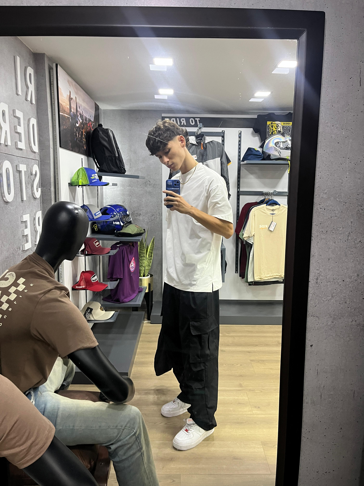

Informatica
Soy estudiante de cuarto semestre de Ingenieria Informatica con base en programacion, desarrollo web, bases de datos e Inteligencia Artificial. Me enfoco en crear soluciones limpias, profesionales y escalables.
Volver al inicioPortada Personal
Estudiante de Ingenieria Informatica con enfoque en desarrollo de software e Inteligencia Artificial.
Soy estudiante de cuarto semestre de Ingenieria Informatica con base en programacion, desarrollo web, bases de datos e Inteligencia Artificial. Me enfoco en crear soluciones limpias, profesionales y escalables.
Volver al inicio
Mi meta es convertirme en uno de los mejores desarrolladores de IA. Aspiro a crear inteligencia artificial avanzada, desarrollar proyectos innovadores y consolidarme como referente en esta area.
Volver al inicio
Soy disciplinado, curioso y analitico. Me apasiona aprender nuevas tecnologias, construir proyectos con impacto y crecer de forma constante tanto en lo tecnico como en lo personal.
Volver al inicio